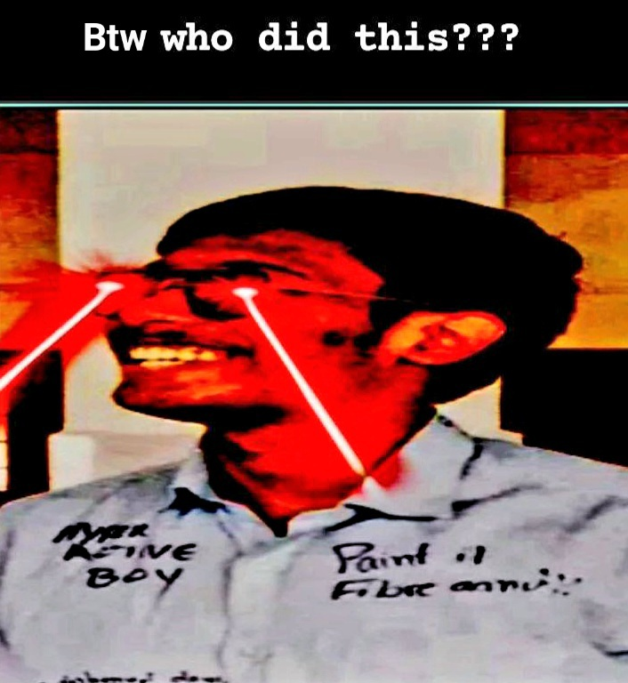
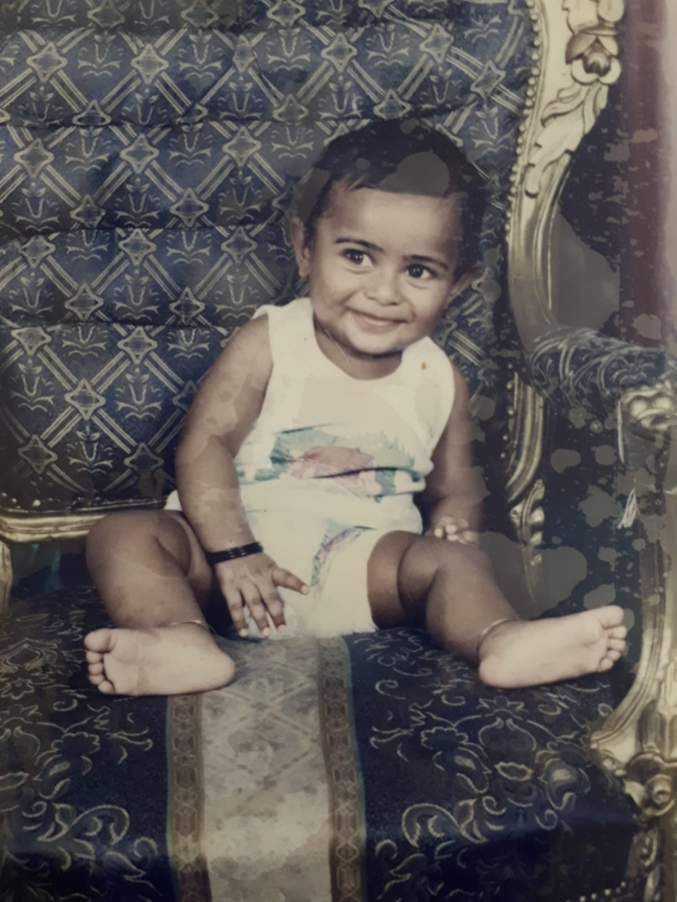

I adhere, endorse and propogate the idea and legacy of the beloved individual Viswas Pole Joknee. All my works are not a speck of the mimick of his creativity, and I do admit the fact that he is one of a very few people willing to save my ass anytime I plan for Dinner Reservation. And this is my chance to express my acknowledgement and gratitude towards this entity who made me who I am today. Props to V(eetile per) A(cchante Per) Adharsh. too.
It all started on a cold rainy day of shabbat 8th day of November, in the year 2003. God said, "Let there be two of them", and then there were two of them. God said, "let one be handsome, and the other be ugly", and then they were handsome, and ugly. Knowing that the handsome would take advantage of all his powers, the ugly one decided to take him out in the womb of Ms. Shemeera Hashim, direct.
And then the ugly one was welcomed to the filthy planet with reluctance by Mr and Mrs. Hashim Yoonus, and named him Ammar Bin Hashim. The handsome twin was then interred next to his beloved grandparents. Life goes on with the previous womb occupier of Ms. Shemeera named Oachi. A "blokette" who now have been trying not to succumb to the detrimental medical college founded by some other bloke named Jaggu Shivarathreeshwara.
The impending and apparently stable version of the idiot in question.
\The idiot in question at the genesis era. Took him a huge while to realize how the whole world would turn against his face.
Ammar Bin Hashim (2003-2023) has decided to assume the world he lives in as a source of an eternal peace and tranquility, since the day he started to convey conventional and understandable words from his mouth. Despite knowing his cognitive imparity and ADHD, the hashims decided to send him to one of the most pathetic schools ever at that time at the age of 4. Knowing he is not a normal child and possess some real percipiential disorders, the parents considered him as a normal child and proceeded to treat him the way how the parents of other children used to do. Earlier being kicked out from the kindergarten section of another school (Couldn't find their authentic link, what a sham), the parents finally made use of their innocent braincells to realize the worthlessness of having such an autistic son. Sad they couldn't find any way to get rid of him, but the son never even had to worry about it all all, since he was in the happiest phase of his life, not knowing what could happen to him in 10 years would be something he never thought he would go through.
All this little creep did was to find any means to induce predicaments to his beloved Oachi and to his parents, who had to find some way to make him feel adhered into his world of comfort and hopes, while living in the old apartment of the nostalgic Dammam. Remniscents worth of Joy and Tears still live there, and that gave a smile on his face, even after he decided to subverse his rotting life into the detrimental life beneath the Musaliar's massive minarets. by using the recuperation times that span for about a month every year. The world around little Ammar was filled with Joy and hopes, and at some times couldn't bear the amount of joy he could contain, and jump around the room like a baby goat. A time of influence though infuriated by some of his unwanted intimidating classmates, he chose to seek happiness through curiousity and games on an old HP 32-bit Desktop PC his father bought for him for hopes to prove a point, that his son is not a retard. Stories has it that this child was once considered one of the intelellectually advanced students of their school at that time, alongside the nerd ass turdball Soil Erection.
The years after somehow flourishing from the preparatory era has led him to see a hope, a hope he once wanted to return to him after 13 years. Things started to go uphill ever since Ms. Shemeera realized that her son with such unendurable cognitive imparity must forget for a while about how lonely of a prick he would really be in the end, and decided to take care of his academic life. It was at this point of his life where he was forced to be convinced discursively by his beloved parents that it is his grades that would define his emotional balance, and thus he believed and complied, like a submissive schmuck.
And the time marched through the days, that turned into months, then into years. And so did little Ammar with some delusional hopes of being someone relevant. The long-distant genetic mutuals duly noted his abrupt academic insurrection, decided to find any means by which they could mark an end to it.